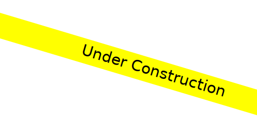

done_all
Reaching the Next Generation
It's our mission to reach out to students of all ages, gearing them to expand their horizons through STEM and life skills.
settings
Developing New Skills
Members gain valuable experience in many STEM skills, such as mechanics, wiring, fabrication, and programming; not to mention useful life skills, including strategic thinking, writing, public speaking, and much more.
thumb_up
Growing in Knoweldge
Students leave the team with the Technical experience and knowledge that accompanies particiaption in a FIRST program.
About Us
FIRST Robotics Competition Team “Biohazard” 4050 is the high-school division of the Franklin County 4-H Robotics Club. Since 2012, Team 4050 has provided local students with the opportunity to participate in the FIRST Robotics Competition program. In the 2015-2016 season, Team 4050 was host to over 25 students, from 3 states, guided by over a dozen mentors.
The focal point of Team 4050’s existence is participation in FIRST Robotics Competition. Each year, members and mentors work together to design and build a unique robot. In January, FIRST releases the annual “Game” that they must design their robot to participate in. To add to the challenge, they are given only 6 weeks to complete the robot. In the ensuing months, they attend two regional competitions, where they compete against 50+ other Teams, each with their own unique robot. Teams who win a regional are given the opportunity to attend a Championship event, where they compete for best in the world.
In 2015, the FRC Team won the Chesapeake Regional competition and had the opportunity to go to the World Championship, a huge milestone and a major accomplishment.
Team History
- Our fifth year began our new approach to the build season. After heavy strategizing, we created a game plan for our new robot, “Dialga – The Steel Dragon”. Continuing in our tradition of building a practice robot, we continued to design and build after the conclusion of our build season. We attended the Pittsburgh Regional and nearly won the entire event after making it into the finals. After making further improvements, we went to the Smoky Mountain Regional and made it to the quarter-finals. We walked away with a beautiful silver metal and the Quality Award.
- With our fourth year came experience and a routine schedule. We built our towering “Anonymous” who stacked totes and recycling containers. After a disappointing appearance at the Pittsburgh Regional, we made modifications and had the opportunity to go to the Chesapeake Regional again. While there, we were selected by the top ranked alliance and won the event! This allowed us to go to the World Championship in St. Louis for the first time in our existence. We had an amazing time.
- Biohazard had grown even more, beginning an efficient scouting program and improving our build strategy. Our robot, “Toxic Lepra-Khan,” was by far our most beautiful robot thus far. This was the first year we built an identical robot for practice purposes. We then attended the Pittsburgh Regional—while there, we made the playoffs and won the Excellence in Engineering Award. Overall, a successful season.
- Biohazard 4050 was the new start for our team, with a new name and image. After growing our team significantly in numbers—by both members and mentors—we engaged in our second season. Six weeks of intense prototyping, building, and testing ensued before we and our robot, “Total Meltdown,” attended the Pittsburgh and Chesapeake Regionals, finishing in the playoffs in both events. We had greatly improved since our start a year before.
- Tech Team Franklin began their six-week build period late, with only ten members and a handful of mentors. After consistent meetings and training in electrical, mechanical, and programming, our robot “Genesis” was born. We attended the Pittsburgh Regional and, after a successful learning experience, began preparing for a new year.
Members
Our members are the valuable pieces who fit Team 4050 into a beautiful puzzle. Through the bond of teamwork, they operate their group with leadership and skill. Click below to examine each piece more closely.
Mentors
Our mentors are the glue of our team. The puzzle falls apart without their guidance, input, and valuable skills they pass to us. Click below to learn more about them.
Sponsors
 Sponsors play a key role in our team's success and we wouldn't be able to do it without them. Here is a list of our sponsors this year. If you would like to become a sponsor, feel free to Contact Us.